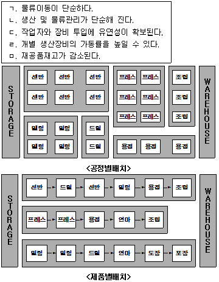
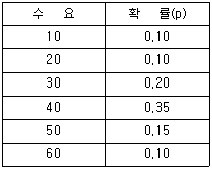
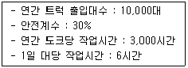
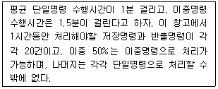
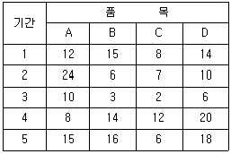
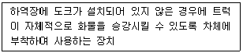
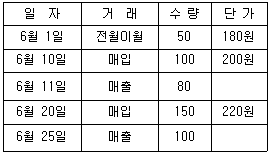
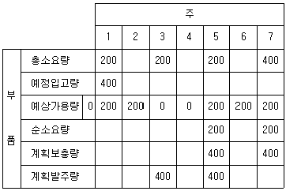
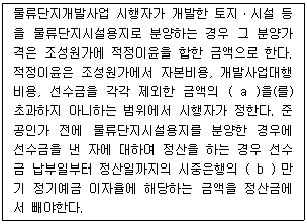
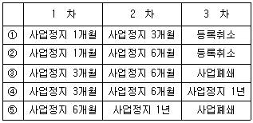

물류관리사-2교시 (2009-08-23 기출문제)
1과목: 보관하역론
1. 폐쇄형 천장 트랙에 동일 간격으로 매달려 있는 운반기에 화물을 탑재하여 운반하며, 가공, 조립, 포장, 보관 작업 등에 사용되는 기기는?
- 체인 컨베이어(Chain Conveyor)
- 무인이송차량(AGV)
- 지브 크레인(Jib Crane)
- 롤러 컨베이어(Roller Conveyor)
- 트롤리 컨베이어(Trolley Conveyor)
(정답률: 알수없음)

2. 드라이브 인 랙(Drive-in Rack)의 개념에 관한 설명으로 옳은 것은?
- 파렛트에 적재된 물품의 보관에 이용되고 한쪽면에 출입구가 있으며 포크리프트가 그 가운데로 들어가서 이용하는 랙이다.
- 천장이 높은 경우 하부에 랙을 설치하고, 그 위에 플로어를 깔아 다시 랙을 설치한 형태이다.
- 통로와 선반을 다층식으로 겹쳐 쌓은 랙이다.
- 한쪽에서 입고하고 다른 한쪽에서 출고되어 선입선출이 용이한 랙이다.
- 수평 또는 수직으로 순환하여 소정의 입출고 장소로 이동이 가능한 랙이다.
(정답률: 알수없음)
3. 수직과 수평방향으로 동시에 이동 가능하고, 수평으로 초당 3m, 수직으로 초당 1m의 속도로 움직이는 스태커 크레인(Stacker Crane)이 지점 A(10, 30)에서 지점 B(40, 15)로 이동할 때 소요되는 시간은? [단, (X, Y)는 원점으로 부터의 단위거리(m)를 나타낸다]
- 10초
- 15초
- 20초
- 25초
- 30초
(정답률: 알수없음)
4. 크레인에 관한 설명으로 옳지 않은 것은?
- 지브 크레인(Jib Crane) - 지브(Jib) 끝에 화물을 매달아 올리는 크레인으로 항만이나 선박에 설치하여 화물 및 해치를 운반하는데 이용한다.
- 갠트리 크레인(Gantry Crane) - 레일 위를 주행하는 다리를 가진 거어더에 트롤리가 장착된 크레인이다.
- 언로더(Unloader) - 양륙 전용의 크레인으로써 호퍼, 피이더, 컨베이어 등을 장착한 것이다.
- 데릭(Derrick) - 일정한 간격을 가진 교각형 기둥으로 상부 크레인을 지지하고 기둥의 상하로 컨테이너를 들어 올려 적재한다.
- 스태커 크레인(Stacker Crane) - 랙에 화물을 입출고 시키는 크레인의 일종으로 하부에 주행레일이 있고 상부에 가이드레일이 있는 통로 안에서 주행장치로 주행한다.
(정답률: 알수없음)
5. 분류시스템 중 화물의 형상, 두께 등에 따라 폭넓게 대응하여 신문사, 우체국, 통신판매 등의 각종 배송센터에서 이용되는 방식은?
- 틸팅(Tilting) 방식
- 다이버터(Diverter) 방식
- 이송(Transfer) 방식
- 운반(Carrier) 체인 방식
- 밀어내기(Pusher) 방식
(정답률: 알수없음)
6. 단일명령만을 수행하는 자동창고시스템(AS/RS: Automated Storage and Retrieval System)에서는 시간당 360건의 주문을 처리한다. 이때, S/R(Storage and Retrieval) 장비의 운행당 평균주기시간은 1분이며 자동창고의 저장 용량이 9,000단위, 랙의 단(Tier)수가 15일 때, 저장 랙을 구성하는 베이(Bay)수는?
- 25
- 50
- 75
- 100
- 125
(정답률: 알수없음)
7. JIT(Just In Time)형 재고보충방식에 관한 설명으로 옳지 않은 것은?
- 후속공정이 주도권을 갖고 있다.
- 푸쉬(Push)형 재고보충방식이라고도 한다.
- 재고감축을 위한 수단으로 현장의 문제점을 근원적으로 찾아서 제거하는 것을 유도한다.
- 후속공정에서 인수해 간 수량만큼 선행공정에서 보충한다.
- 물류관리시스템 내의 재고를 최소한도로 유지시킨다.
(정답률: 알수없음)
8. 안전재고량에 관한 설명으로 옳지 않은 것은?
- 수요는 확정적으로 발생하고, 부품공급업자가 부품을 납품하는데 소요되는 기간(조달기간)이 확률적으로 변할 때, 조달기간의 평균이 길어지더라도 조달기간에 대한 편차가 같다면 부품공급업자와 생산공장 사이의 안전재고량은 변동이 없다.
- 안전재고량은 안전계수와 수요의 표준편차에 비례한다.
- 고객의 수요가 확률적으로 변동한다고 할 때, 수요변동의 분산이 작아지면 완제품에 대한 안전재고량은 감소한다.
- 생산자의 생산수량의 변동폭이 작아지면 부품공급업자와 생산공장 사이의 안전재고량은 감소한다.
- 부품공급업자가 부품을 납품하는데 소요되는 기간의 분산이 작아지면 부품공급업자와 생산공장 사이의 안전재고량은 증가한다.
(정답률: 알수없음)
9. 공장에서 생산라인을 설계할 때 사용하는 대표적인 설비배치 개념은 유사한 공정 설비를 모아놓는 공정별배치(Process Layout)와 제품이 생산되는 공정순서대로 설비를 배치하는 제품별배치(Product Layout)로 분류된다. 다음 보기는 공정별 배치와 제품별배치의 장점을 나열한 것이다. 올바르게 구분된 것은?

- 공정별배치 : ㄱ, ㄴ, ㄷ, ㅁ, 제품별배치 : ㄹ
- 공정별배치 : ㄱ, ㄴ, 제품별배치 : ㄷ, ㄹ, ㅁ
- 공정별배치 : ㄴ, ㄷ, ㄹ, 제품별배치 : ㄱ, ㅁ
- 공정별배치 : ㄷ, ㄹ, 제품별배치 : ㄱ, ㄴ, ㅁ
- 공정별배치 : ㄷ, 제품별배치 : ㄱ, ㄴ, ㄹ, ㅁ
(정답률: 알수없음)
10. 수요예측 기법들 중 정량적인 기법이 아닌 것은?
- 지수평활법
- 이동평균법
- 회귀분석법
- 시계열분석법
- 델파이기법
(정답률: 알수없음)
11. 어느 소매점이 어버이날을 대비해 카네이션을 주문하려고 한다. 단, 판매기간이 짧기 때문에 주문은 1회만 하고 10송이 단위로 주문해야 한다. 이때 카네이션 한 송이의 구매가격은 1천원, 판매가격은 2천원이다. 어버이날까지 판매하지 못한 카네이션은 2백원을 받고 꽃배달집에 처분된다. 소매점이 추정한 수요분포가 다음과 같을 때 합리적 주문량은?

- 20
- 30
- 40
- 50
- 60
(정답률: 알수없음)
12. 공동집배송의 개념과 도입효과에 관한 설명으로 옳지 않은 것은?
- 공동집배송을 통하여 차량 적재율을 높이고 운송거리의 단축을 통하여 물류비의 절감을 기대할 수 있다.
- 공동집배송은 작업을 공동으로 수행하므로 화물흐름의 원활화, 인력절감, 공간활용의 극대화를 기대할 수 있다.
- 공동집배송센터는 화주 및 물류업자가 공동으로 사용할 수 있도록 집배송시설 및 부대업무시설이 설치되어 있는 지역 및 시설물이다.
- 공동집배송단지는 관련법상의 제약과 높은 지가로 개별업체차원에서 개발이 곤란한 경우에 유용하다.
- 공동집배송단지로 개발하는 것은 토지효율 및 투자효율을 낮출 수 있다.
(정답률: 알수없음)
13. “갑”회사의 물류거점시설 작업동선의 효율성 제고를 위하여 다음과 같은 조건을 파악하였다. 향후 물량증가가 없다고 가정할 때, 트럭 도크는 몇 개가 필요한가?

- 18개
- 22개
- 24개
- 26개
- 28개
(정답률: 알수없음)
14. 다음 중 ODCY(Off-dock Container Yard)의 문제점이 아닌 것은?
- 물류비의 추가 발생
- 도심 교통난 가중
- 컨테이너 장치보관 기능 감소
- 토지 이용과 도시개발의 제약
- 항만통제 기능의 약화
(정답률: 알수없음)
15. 공급자와 수요자 중간에 위치하여 수요와 공급을 통합하고 계획하여 효율화를 도모하는 물류센터에 관한 설명으로 옳지 않은 것은?
- 공동물류센터는 자금 조달능력이 부족하고 물량을 확보하기 어려운 다수의 중소기업이 물류시설을 한 장소에 설치하고 공동으로 운영하는 시설이다.
- 물류센터를 한 곳에 집중해 설치할 경우 거점간의 수송업무가 늘어난다.
- 물류센터의 설치시 창고규모가 커지므로 입출하, 유통가공, 집품, 분류 등의 업무량이 증가한다.
- 물류시설의 집약화로 저렴한 비용으로 대고객 서비스를 제공할 수 있다.
- 물류센터는 재고량을 시계열적으로 분석할 수 있어서 시장동향을 쉽게 파악할 수 있고, 인기상품과 사양상품을 신속히 파악할 수 있다.
(정답률: 알수없음)
16. 유닛로드시스템(Unit Load System)에 관한 설명으로 옳지 않은 것은?
- 취급단위를 다양화하여 고객요구에 대응한다.
- 기계하역을 보다 용이하게 할 수 있다.
- 하역시간을 단축할 수 있다.
- 포장의 간소화로 포장비를 절감할 수 있다.
- 대표적 유닛로드(Unit Load)로 파렛트와 컨테이너를 들 수 있다.
(정답률: 알수없음)
17. 자동창고시스템(AS/RS : Automated Storage and Retrieval System)에서 S/R(Storage and Retrieval) 장비가 제품을 랙에 저장하고 반출하는 방법은 단일명령(Single Command) 처리방식과 이중명령(Dual Command) 처리방식으로 구분된다. 다음의 가동조건에서 S/R장비의 평균 가동률은?

- 41.7%
- 58.3%
- 66.7%
- 83.3%
- 100.0% 이상이므로 처리가 불가능하다.
(정답률: 알수없음)
18. “갑” 회사는 A제품을 판매하고 있다. A제품에 대한 주간 수요는 100개이고, 주문 리드타임(Lead Time)은 2주이다. “갑”회사가 보유재고가 300개일 때 500개를 주문하는 재고정책을 사용할 경우 평균재고는?
- 300개
- 350개
- 400개
- 450개
- 500개
(정답률: 알수없음)
19. 랙의 종류와 특성이 잘못 연결된 것은?
- 파렛트 랙(Pallet Rack) - 주로 파렛트에 쌓아올린 물품의 보관에 이용
- 암 랙(Arm Rack) - 장척화물의 보관에 이용
- 드라이브 스루 랙(Drive-through Rack) - 파렛트가 랙 내에서 미끄러져 움직이며, 한쪽에서 입고하고 다른 한쪽에서 출고되는 선입선출이 필요한 물품을 효과적으로 보관할 수 있는 랙
- 이동 랙(Mobile Rack) - 레일 등을 이용하여 직선적으로 수평 이동되는 랙
- 회전 랙(Carousel) - 사람은 고정되어 있고 물품이 피커(Picker)의 장소로 이동하여 피킹(Picking)하는 형태의 랙
(정답률: 알수없음)
20. 오더피킹(Order Picking)의 방법에 관한 설명으로 옳지 않은 것은?
- 1인 1건 방법은 1인의 피커(Picker)가 1건의 주문전표에 명기된 물품을 피킹하는 방법이다.
- 릴레이 방법은 여러 사람의 피커가 각각 자기가 분담하는 종류나 선반의 작업범위를 정해 두고서 피킹전표 속에서 자기가 맡은 종류의 물품만을 피킹해서 릴레이식으로 다음의 피커에게 넘겨주는 방법이다.
- 존피킹(Zone Picking) 방법은 릴레이 방법과 똑같이 여러 사람의 피커가 각각 자기가 분담하는 종류의 선반의 작업 범위를 정해 두고서 피킹 전표 속의 자기가 맡은 종류의 물품만을 피킹한다.
- 일괄오더피킹 방법은 여러 건의 주문전표를 모아서 한번에 피킹하는 방법으로, 주문별로 분류할 필요가 없다.
- 총량피킹 방법은 한나절이나 하루의 주문전표를 모아서 피킹하는 방법이다.
(정답률: 알수없음)
21. 창고관리시스템(WMS: Warehouse Management System)의 주요기능에 관한 설명으로 옳지 않은 것은?
- 재고관련기능 - 입고관리, 보관관리, 선입선출관리
- 주문관련기능 - 피킹(Picking)관리, 자동발주 시스템
- 출고관련기능 - 수ㆍ배송관리, 배차 스케줄 운영
- 관리관련기능 - 인력관리, 물류센터 지표관리, 위치(Location) 관리를 통한 재고 내역 및 실물위치 추적 용이성
- 인터페이스(Interface)기능 - 무선통신, 물류센터의 실시간 정보화
(정답률: 알수없음)
22. 창고의 형태 및 기능에 관한 설명으로 옳지 않은 것은?
- 소비지에 가깝게 위치하여 소단위 배송을 위한 거점시설을 물류센터라고 한다.
- 자동화 창고를 구성하는 필수 설비로 보관랙(Storage Rack), S/R(Storage and Retrieval)장비, 보관용기(Storage Container) 등이 있다.
- 소비자 지향의 물류가 강조되면서 창고의 기능은 유통을 지원하는 분배기능에서 보관기능으로 전환되고 있다.
- 보관랙의 화물을 입출고 시키는 스태커 크레인(Stacker Crane)은 주행 및 승강장치, 포크(Fork)장치로 구분되어 있다.
- 창고의 형태로는 단층창고, 다층창고, 입체자동창고 등이 있다.
(정답률: 알수없음)
23. 투빈시스템(Two Bin System)에 관한 설명으로 옳지 않은 것은 ?
- 투빈시스템을 사용하면 선입선출을 지킬 수 있는 가능성이 높아진다.
- 투빈시스템을 사용하면 재발주점이 정해져 버리기 때문에 재고감축을 하기 어렵다.
- 투빈시스템을 사용할 때 흐름 랙(Flow Rack)을 사용하면 통로공간의 낭비를 줄이고, 저장/반출 작업을 단순화시킬 수 있다.
- 투빈시스템을 사용하면 재고수준을 계속 추적할 필요가 없다.
- 투빈시스템을 사용하기 위해서는 한 가지 품목에 대해 두 개의 저장 공간이 필요하다.
(정답률: 알수없음)
24. 다음 표는 기간별 품목의 재고량을 파렛트 단위로 기록한 자료이다. 창고에 4개의 품목이 저장되며 각 품목은 한 번 입고되면 재고가 소진되는 시점에 재보충된다. 이를 수용하기 위해 필요한 저장소요공간을 산출하고자 한다. 보관시스템의 저장방식 중에서 임의위치저장(Randomized Storage)방식과 지정위치저장(Dedicated Storage)방식을 각각 적용할 때 파렛트 단위로 필요한 각각의 공간은?

- 50, 68
- 55, 68
- 50, 70
- 55, 70
- 55, 72
(정답률: 알수없음)
25. 다음은 무엇에 관한 설명인가?

- 리프트게이트(Lift Gate)
- 도크레벨러(Dock Leveller)
- 도크보드(Dock Board)
- 파렛트로더(Pallet Loader)
- 테이블리프터(Table Lifter)
(정답률: 알수없음)
26. 1100mm × 1100mm 표준파렛트에 가로 300mm, 세로 200mm, 높이 150mm의 박스를 적재하려고 한다. 1단 적재만 가능하다고 할 때, 최대 몇 개의 상자를 적재할 수 있는가? (단, 적재 높이는 150mm를 유지해야 한다)
- 17개
- 18개
- 19개
- 20개
- 21개
(정답률: 알수없음)
27. 파렛트 풀 시스템(PPS: Pallet Pool System)에 관한 설명으로 옳지 않은 것은?
- 표준화된 파렛트를 여러 화주 및 물류업자가 공동으로 이용하는 제도로서, 파렛트를 다량 확보하고 있는 풀 조직이 파렛트에 대한 납품, 회수관리, 수리 등을 담당하는 공동이용제도이다.
- 운영방식으로는 교환방식, 렌탈방식, 교환리스병용방식, 대차결재방식 등이 있다.
- 운송형태는 기업단위 PPS, 업계단위 PPS, 개방적 PPS 등이 있다.
- 지역간 수급해결, 계절적 수요대응, 설비자금 절감, 사회간접자본 억제 및 물류기기 표준화 촉진 등을 위하여 필요한 시스템이다.
- 언제나 필요로 할 때 편리하게 사용할 수 있으며, 자사에서 필요한 규격을 임의로 선택 및 도입할 수 있어 매우 편리하다.
(정답률: 알수없음)
28. 다음 표와 같은 상황에서 후입선출법을 적용하였을 때 기말재고자산은?

- 18,000원
- 20,000원
- 22,000원
- 24,000원
- 26,000원
(정답률: 알수없음)
29. 보관 제품의 특성에 있어서 종류가 많고 회전수가 높은 경우, 하역시스템과 보관시스템이 올바르게 연결된 것은?
- 무인이송차량(AGV) - 흐름 랙(Flow Rack), 파렛트 랙
- 스태커 크레인(Stacker Crane) - 고층 랙, 자동창고
- 지게차 - 파렛트 랙, 흐름 랙(Flow Rack)
- 이동식 선반 - 파렛트 평치, 경량 랙
- 수동 적재 - 파렛트 랙, 데크형 랙
(정답률: 알수없음)
30. 디지털 피킹시스템(DPS: Digital Picking System)에 관한 설명으로 옳지 않은 것은?
- 다품종 소량, 다빈도 피킹을 하는 현장에 적합하다.
- 시스템의 변경이 용이하며, 시각성이 높다.
- 피킹의 신속성과 정확성을 통하여 작업생산성 및 서비스를 향상시킬 수 있다.
- 작업자의 교체 시 혼란을 초래할 수 있으며, 갑작스런 물량처리 시 대응이 곤란하다.
- 적량을 적기에 공급할 수 있으므로 고객 요구에 맞추기 용이하다.
(정답률: 알수없음)
31. 다음 중 크로스도킹(Cross-docking)을 고려하는 이유로 적합한 것은?
- 제품 입하시 출하지를 알고 있을 때
- 기업의 유통센터의 이용률이 낮을 때
- 입하되는 개별 화물이 소량일 때
- 화물이 납기에 민감하지 않을 때
- 제품의 가격이 정해져 있지 않을 때
(정답률: 알수없음)
32. 자재 운반을 위해 사용되는 컨베이어에 관한 설명으로 옳지 않은 것은?
- 자재검사와 운반이 동시에 수행될 수도 있다.
- 작업장 간에 화물의 임시 저장소로서 역할도 가능하다.
- 오버헤드(Overhead) 컨베이어의 사용으로 공간 활용도를 높일 수 있다.
- 경로가 직선이 될 필요는 없다.
- 액체류 또는 분말형태로는 운반할 수 없다.
(정답률: 알수없음)
33. 물품의 입출고를 용이하게 하고 효율적으로 보관하기 위해 작업의 접근성을 강조하는 보관의 원칙은?
- 통로대면보관의 원칙
- 회전대응보관의 원칙
- 명료성의 원칙
- 형상특성의 원칙
- 네트워크보관의 원칙
(정답률: 알수없음)
34. 창고관리시스템(WMS: Warehouse Management System)에 관한 설명으로 옳지 않은 것은?
- 물류센터를 효과적으로 운영하기 위해 자동화, 정보화, 지능화가 요구되고 있으며, 컴퓨터 통합관리 창고의 등장과 정보기술의 발달로 창고관리시스템(WMS)이 등장하게 되었다.
- 입하, 피킹(Picking), 출하 및 재고사이클 카운트 등의 창고 비즈니스 프로세스와 창고활동을 효율적으로 관리하는데 사용되는 시스템이다.
- WMS와 연휴하는 주 정보시스템은 PMS(Production Management System), TMS(Transportation Management System) 그리고 MHS(Material Handling System)이다.
- WMS를 갖춘 물류센터는 RFID(Radio Frequency Identification)나 바코드 시스템, 무선자동인식 시스템 등 물품과 정보의 일체적 관리를 자동적으로 실시하는 시스템이 정비되어 있다.
- WMS 도입으로 재고 정확도, 공간ㆍ설비 활용도, 제품처리능력, 재고회전률, 고객서비스, 노동ㆍ설비 생산성 등이 향상된다.
(정답률: 알수없음)
35. 하역 및 보관의 합리화 방안 중 하나는 RFID (Radio Frequency Identification) 시스템을 도입하여 관리의 효율화를 기하는 것이다. 다음 중 RFID 시스템에 관한 설명으로 옳지 않은 것은?
- RFID 시스템은 보통 판독 및 해독 기능을 하는 판독기(RF Reader), 고유 정보를 내장한 전파 식별 태그(RFID Tag) 그리고 데이터 처리 장치 및 운용 소프트웨어로 구성된다.
- RFID 시스템은 태그(Tag)의 동력 유무에 따라 능동형(Active) RFID와 수동형(Passive) RFID로 구분되기도 한다.
- RFID 시스템은 라디오 주파수(Radio Frequency)를 이용하여 송수신하기 때문에 바코드 시스템에 비해 원거리에서도 사용 가능하다는 장점이 있다.
- RFID 시스템은 바코드 시스템에 비해 다양한 많은 양의 정보를 기록할 수 있다는 장점이 있다.
- RFID 시스템은 정보의 보안성이 뛰어나다는 장점이 있다.
(정답률: 알수없음)
36. 개별 활동을 유기체로서의 활동으로 간주하는 하역 합리화의 기본 원칙은?
- 유닛로드(Unit Load)의 원칙
- 기계화 원칙
- 시스템화의 원칙
- 중력 이용의 원칙
- 표준화의 원칙
(정답률: 알수없음)
37. 공급체인관리(SCM: Supply Chain Management)에서 채찍효과(Bullwhip Effect)에 대한 생성요인 및 대처방안으로 옳지 않은 것은?
- 공급체인(Supply Chain) 전반에 걸쳐 수요정보를 중앙집중화하여 체계적으로 관리함으로써 불확실성을 제거한다.
- 리드타임(Lead Time)이 길어지면 수요와 공급의 변동 폭의 증감정도가 축소된다.
- 제품을 생산하고 공급하는 데 소요되는 리드타임과 주문 처리에 소요되는 정보 리드타임을 단축시킨다.
- 공급처관리의 효율성을 중시하여 일괄적으로 주문하는 경우 발생한다.
- 공급체인 전체의 관점이 아니라 개별기업 관점에서 의사결정을 수행하게 되면 공급체인 전체의 왜곡현상을 발생시킨다.
(정답률: 알수없음)
38. 다음은 임의의 부품에 대한 자재계획표의 일부이다. 부품의 리드타임(Lead Time)과 로트크기(Lot Size)는?

- 리드타임 : 2주, 로트크기 : 200
- 리드타임 : 2주, 로트크기 : 400
- 리드타임 : 3주, 로트크기 : 200
- 리드타임 : 3주, 로트크기 : 400
- 리드타임 : 4주, 로트크기 : 200
(정답률: 알수없음)
39. “갑”회사 A부품의 연간 수요는 50,000개이고, 1회 발주비가 4,000원, 연간 단위당 재고 유지비가 100원일 때, EOQ(Economic Order Quantity)를 활용한 연간 최적 주문횟수는?
- 22회
- 23회
- 24회
- 25회
- 26회
(정답률: 알수없음)
40. “갑”회사는 3 종류의 제품을 보관하는 창고를 신축하려고 하며, 지정위치저장(Dedicated Storage)방식을 사용할 예정이다. 각 제품의 입출고는 독립적으로 이루어지며, 각 제품의 재고수준도 상호 독립적이다. 각 제품당 보관 서비스 수준이 98%가 되도록 보관 소요공간을 할당하는 경우 가장 근사(近似)한 창고보관 서비스 수준은?
- 100%
- 98%
- 96%
- 94%
- 92%
(정답률: 알수없음)
2과목: 물류관련법규
41. 물류정책기본법령상 반드시 청문을 실시하여야 하는 처분으로 옳지 않은 것은?
- 지정기준에 미달한 종합물류기업 인증센터에 대한 지정의 취소
- 지정기준에 미달한 국가물류통합데이터베이스운영자에 대한 지정의 취소
- 부정한 방법으로 지정을 받은 종합물류정보망사업자에 대한 지정의 취소
- 거짓으로 등록을 한 국제물류주선업자에 대한 등록의 취소
- 부정한 방법으로 취득한 물류관리사 자격의 취소
(정답률: 알수없음)
42. 물류정책기본법령상 물류사업의 범위 중 물류서비스업으로 옳지 않은 것은?
- 화물취급업
- 물류정보처리업
- 항만운송관련업
- 물류컨설팅업
- 물류터미널운영업
(정답률: 알수없음)
43. 물류정책기본법령상 물류관리사 자격시험에 관한 설명으로 옳은 것은?
- 시험은 반드시 매년 1회 실시하여야 한다.
- 시험의 공고는 관보에만 게재하여야 한다.
- 시험은 반드시 선택형으로 한다.
- 시험의 공고는 시험시행일 60일 전까지 공고하여야 한다.
- 시험은 필기의 방식으로 실시한다.
(정답률: 알수없음)
44. 물류정책기본법령상 과태료 처분의 대상으로 옳지 않은 것은?
- 국제물류주선업의 등록에 따른 권리ㆍ의무를 승계한 자가 법령에 따른 신고를 하지 않은 경우
- 국제물류주선업자가 미리 신고를 하지 아니하고 국제물류주선업을 휴지하거나 폐지하였을 때
- 국제물류주선업자가 변경등록을 하지 아니하고 법령이 정한 중요한 사항을 변경한 때
- 국가물류기본계획의 수립을 위한 관련 기초자료의 제출 요청에 물류기업이 특별한 사정없이 자료를 제출하지 아니한 때
- 물류현황조사에 필요한 자료의 제출 요청에 물류기업이 거짓의 자료를 제출한 때
(정답률: 알수없음)
45. 물류정책기본법령상 내용으로 옳지 않은 것은?
- 국토해양부장관은 물류기업에 대하여 물류정보화에 관련된 설비 또는 프로그램의 개발ㆍ운용비용의 일부를 지원할 수 있다.
- 물류기업 및 화주기업은 국토해양부장관이 고시한 기업물류비 산정지침에 따라 반드시 물류비를 관리하여야 한다.
- 물류체계란 효율적인 물류활동을 위하여 시설ㆍ장비ㆍ정보ㆍ조직 및 인력 등이 서로 유기적으로 기능을 발휘할 수 있도록 연계된 집합체를 말한다.
- 특별시장 및 광역시장은 지역물류기본계획을 수립하거나 변경한 때에는 이를 공고하고 인접한 시ㆍ도의 시ㆍ도지사, 관할 시ㆍ군ㆍ구의 시장ㆍ군수ㆍ구청장 등에게 이를 통보하여야 한다.
- 국토해양부장관은 정부출연연구기관을 종합물류기업 인증센터로 지정할 수 있다.
(정답률: 알수없음)
46. 물류정책기본법령상 국토해양부장관이 물류기업 또는 화주기업에게 행정적ㆍ재정적 지원을 할 수 있는 환경친화적 물류활동으로 옳지 않은 것은?
- 물류자원을 절약하고 재활용하는 활동으로서 국토해양부장관이 정하여 고시하는 사항
- 환경친화적인 운송수송수단 또는 포장재료의 사용
- 물류활동에 따른 폐기물을 이용한 재활용 업종 신설
- 기존 물류시설 ㆍ 장비의 환경친화적인 물류시설ㆍ장비로의 변경
- 환경친화적인 물류시스템의 도입 및 개발
(정답률: 알수없음)
47. 물류정책기본법령상 물류관련협회에 관한 설명으로 옳지 않은 것은?
- 물류기업, 화주기업, 그 밖에 물류활동과 관련되는 자는 물류관련협회를 설립할 수 있다.
- 물류관련협회를 설립하려는 경우에는 해당 협회의 회원이 될 자격이 있는 기업 100개 이상이 발기인으로 정관을 작성하여 해당 협회의 회원이 될 자격이 있는 기업 200개 이상이 참여한 창립총회의 의결을 거친 후 소관에 따라 국토해양부장관의 설립인가를 받아야 한다.
- 물류관련협회는 법인으로 한다.
- 물류관련협회에 관하여 이 법에 규정한 것 외에는 민법 중 사단법인에 관한 규정을 준용한다.
- 물류관련협회의 업무 및 정관 등에 필요한 사항은 국토해양부령으로 정한다.
(정답률: 알수없음)
48. 물류정책기본법령상 기업물류비 산정지침에 반드시 포함되어야 할 내용으로 옳지 않은 것은?
- 물류비의 계산 기준 및 계산 방법
- 세목별 물류비의 분류
- 물류비 관련 용어 및 개념에 대한 정의
- 물류비 계산서의 표준 서식
- 영역별ㆍ기능별 및 자가ㆍ위탁별 물류비의 분류
(정답률: 알수없음)
49. 물류시설의 개발 및 운영에 관한 법령상 물류시설개발종합계획에 관한 설명으로 옳지 않은 것은?
- 국토해양부장관은 물류시설의 합리적 개발ㆍ배치 및 물류체계의 효율화 등을 위하여 물류시설(항만시설 제외)의 개발에 관한 종합계획을 5년 단위로 수립하여야 한다.
- 국토해양부장관은 물류시설개발종합계획을 수립하는 때에는 관계 행정기관의 장으로부터 소관별 계획을 제출받아 이를 기초로 물류시설개발종합계획안을 작성하여 특별시장ㆍ광역시장ㆍ도지사 또는 특별자치도지사의 의견을 듣고 관계 중앙행정기관의 장과 협의한 후 물류시설분과위원회의 심의를 거쳐야 한다.
- 물류시설개발종합계획에는 도심지에 위치한 물류시설의 정비에 관한 사항이 포함되어야 한다.
- 물류시설개발종합계획을 변경하고자 하는 때란 물류시설별 물류시설용지면적의 100분의 20이상으로 물류시설의 수요ㆍ공급계획을 변경하려는 때를 말한다.
- 물류시설개발종합계획에서 물류시설을 기능별로 분류할 때 단위물류시설은 창고 및 집배송센터 등 물류활동을 개별적으로 수행하는 최소 단위의 물류시설이다.
(정답률: 알수없음)
50. 물류시설의 개발 및 운영에 관한 법령상 물류단지 안에서 시장ㆍ군수ㆍ구청장의 허가를 받아야 하는 행위가 아닌 것은?
- 건축물(가설건축물을 포함)의 건축, 대수선, 또는 용도변경
- 토지 분할
- 절토, 성토, 정지, 포장 등의 방법으로 토지의 형상을 변경하는 행위, 토지의 굴착 또는 공유수면의 매립
- 경작을 위한 토지의 형질 변경
- 이동이 쉽지 아니한 물건을 1개월 이상 쌓아놓는 행위
(정답률: 알수없음)
51. 물류시설의 개발 및 운영에 관한 법령상 복합물류터미널 사업의 등록을 하려는 자가 등록신청서에 첨부할 서류로 옳지 않은 것은?
- 등록기준에 적합함을 증명하는 서류
- 복합물류터미널의 부지 및 설비의 배치를 표시한 축척 500분의 1 이상의 평면도
- 복합물류터미널의 토지 소유권 또는 사용권, 운영권을 증명할 수 있는 서류
- 신청인이 외국인투자기업인 경우에는 외국인투자촉진법에 따른 외국인투자를 증명할 수 있는 서류
- 신청인(법인의 경우 그 임원)이 외국인인 경우에는 등록의 결격사유에 해당하지 아니함을 증명하는 해당국가의 정부나 그 밖의 권한 있는 기관이 발행한 서류
(정답률: 알수없음)
52. 물류시설의 개발 및 운영에 관한 법령상 물류단지의 지정에 관한 사항으로 옳지 않은 것은?
- 물류단지는 국토해양부장관이 지정한다. 다만, 100만 제곱미터 규모 이하의 물류단지는 관할 시ㆍ도지사가 지정한다.
- 국토해양부장관은 물류단지를 지정하려는 때에는 물류단지개발계획을 수립하여 관할 시ㆍ도지사의 의견을 듣고 관계 중앙행정기관의 장과 협의한 후 물류시설분과위원회의 심의를 거쳐야 한다.
- 국토해양부장관은 물류단지개발계획 중 물류단지개발사업시행자의 변경을 하려는 때에는 물류시설분과위원회의 심의를 거쳐야 한다.
- 시ㆍ도지사는 물류단지를 지정하려는 때에는 물류단지개발계획을 수립하여 관계 행정기관의 장과 협의한 후 물류시설분과위원회의 심의를 거쳐야 한다.
- 물류단지개발사업의 시행자는 물류단지의 지정이 필요하다고 인정하는 때에는 대상지역을 정하여 국토해양부장관 또는 시ㆍ도지사에게 물류단지의 지정을 요청할 수 있다.
(정답률: 알수없음)
53. 물류시설의 개발 및 운영에 관한 법령상 토지소유자에 대한 환지에 관한 설명으로 옳지 않은 것은?
- 환지의 대상이 되는 종전 토지의 가액은 보상공고 시 시행자가 제시한 협의를 위한 보상금액으로 하고, 환지의 가액은 해당 물류단지의 물류단지시설용지의 시장가격을 기준으로 한다.
- 환지를 받을 수 있는 토지소유자는 물류단지개발계획에서 정한 유치업종에 적합한 물류단지시설을 설치하려는 자로서 물류단지의 지정ㆍ고시일 현재 물류단지개발계획에서 정한 최소 공급면적 이상의 토지를 소유한 자로 한다.
- 법령이 정하는 바에 따라 환지를 받으려는 자는 환지신청서에 물류단지시설설치계획서를 첨부하여 시행자에게 제출하여야 한다.
- 환지신청은 시행자가 해당 물류단지에 관한 보상공고에서 정한 협의기간에 하여야 한다.
- 시행자는 물류단지 안의 토지를 소유하고 있는 자가 물류단지개발계획에서 정한 물류단지시설을 운영하려는 경우에는 그 토지를 포함하여 물류단지개발사업을 시행할 수 있으며, 해당사업이 완료된 후 대통령령이 정하는 바에 따라 해당 토지소유자에게 환지하여 줄 수 있다.
(정답률: 알수없음)
54. 물류시설의 개발 및 운영에 관한 법령상 국토해양부 장관 및 시ㆍ지도사가 시행자에 대하여 반드시 물류단지 지정ㆍ승인 또는 인가를 취소하여야 하는 사항이 아닌 것은?
- 거짓이나 그 밖의 부정한 방법으로 물류단지의 지정을 받은 경우
- 거짓이나 그 밖의 부정한 방법으로 시행자의 지정을 받은 경우
- 거짓이나 그 밖의 부정한 방법으로 실시계획의 승인을 받은 경우
- 거짓이나 그 밖의 부정한 방법으로 준공인가를 받은 경우
- 사정이 변경되어 물류단지개발사업을 계속 시행하는 것이 불가능하게 된 경우
(정답률: 알수없음)
55. 물류시설의 개발 및 운영에 관한 법령상의 내용으로 ( )안에 알맞은 것은?(순서대로 a, b)

- 100분의 3, 1년
- 100분의 5, 1년
- 100분의 7, 1년
- 100분의 10, 2년
- 100분의 15, 2년
(정답률: 알수없음)
56. 물류시설의 개발 및 운영에 관한 법령상 정부는 창고업의 육성을 위하여 필요하다고 인정하면 사업을 위한 자금의 일부를 융자할 수 있다. 이에 포함되지 않는 것은?
- 창고시설 관련 기술의 개발
- 창고시설의 보수
- 창고시설의 개조 및 개량
- 창고시설의 임대
- 창고의 건설
(정답률: 알수없음)
57. 화물자동차 운수사업법령상 화주가 밴형화물자동차에 함께 탈 때의 화물은 여객자동차 운송사업용 자동차에 싣기 부적합한 것으로서 중량, 용적, 형상 등이 일정한 기준에 해당되어야 한다. 그 기준으로 옳지 않은 것은?
- 화주 1명당 화물의 중량이 10킬로그램 이상일 것
- 화주 1명당 화물의 용적이 4만 세제곱센티미터 이상일 것
- 불결하거나 악취가 나는 농산물ㆍ수산물 또는 축산물일 것
- 기계ㆍ기구류 등 공산품일 것
- 폭발성ㆍ인화성 또는 부식성 물품일 것
(정답률: 알수없음)
58. 화물자동차 운수사업법령상 화물자동차 운송주선사업의 정의로 옳은 것은?
- 다른 사람의 요구에 응하여 자기 화물자동차를 사용하여 유상으로 화물을 운송하거나 소속 화물자동차 운송가맹점에 의뢰하여 화물을 운송하게 하는 사업을 말한다.
- 다른 사람의 요구에 응하여 유상으로 화물운송계약을 중개ㆍ대리하거나 화물자동차 운송사업 또는 화물자동차 운송가맹사업을 경영하는 자의 화물 운송수단을 이용하여 자기 명의와 계산으로 화물을 운송하는 사업을 말한다.
- 다른 사람의 요구에 응하여 유상으로 화물자동차 운송사업 또는 화물자동차 운송가맹사업을 경영하는 자의 화물 운송수단을 이용하여 화주의 명의와 계산으로 화물을 운송하는 사업을 말한다.
- 다른 사람의 요구에 응하여 유상으로 운송가맹사업자로부터 운송 화물을 배정받아 화물을 운송하거나 운송가맹사업자가 아닌 자의 요구를 받고 화물을 운송하는 사업을 말한다.
- 다른 사람의 요구에 응하여 화물자동차를 사용하여 화물을 유상으로 운송하는 사업을 말한다.
(정답률: 알수없음)
59. 화물자동차 운수사업법령상 손해배상에 대한 운송사업자의 책임이나 분쟁에 관한 설명으로 옳지 않은 것은?
- 국토해양부장관은 손해배상에 관하여 화주가 요청하면 국토해양부령으로 정하는 바에 따라 이에 관한 분쟁을 조정할 수 있다.
- 화물이 인도기한이 지난 후 1개월 이내에 인도되지 아니하면 그 화물은 멸실된 것으로 본다.
- 당사자 쌍방이 조정안을 수락하면 당사자 간에 조정안과 동일한 합의가 성립된 것으로 본다.
- 국토해양부장관은 화주가 분쟁조정을 요청하면 지체 없이 그 사실을 확인하고 손해내용을 조사한 후 조정안을 작성하여야 한다.
- 화물의 멸실ㆍ훼손 또는 인도의 지연으로 발생한 운송사업자의 손해배상책임에 관하여는 상법을 준용한다.
(정답률: 알수없음)
60. 화물자동차 운수사업법령상 경영의 합리화에 관한 설명으로 옳지 않은 것은?
- 운송사업자는 화물자동차 운송사업의 효율적인 수행을 위하여 경영의 일부를 다른 사람에게 위탁할 수 있다.
- 국토해양부장관은 화물자동차 운수사업의 경영개선 또는 운송서비스의 향상을 위하여 필요하다고 인정하면 화물자동차 운수사업의 경영에 관하여 운수사업자를 지도할 수 있다.
- 국토해양부장관은 재무관리 및 사업관리 등 경영실태가 부실하다고 인정되는 운수사업자에게는 경영개선에 관한 권고를 할 수 있다.
- 국토해양부장관은 필요하면 경영실태가 부실하다고 인정되는 운수사업자에게 경영개선에 관한 중ㆍ장기 또는 연차별 계획 등을 제출하게 할 수 있으며 운수사업자가 제출한 경영개선에 관한 계획 등이 불합리하다고 인정되면 변경할 것을 권고할 수 있다.
- 운송사업자는 파산 선고를 받고 복권된 자에 대하여는 경영의 일부 또는 전부를 위탁할 수 없다.
(정답률: 알수없음)
61. 화물자동차 운수사업법령상 운송사업자가 운임과 요금을 국토해양부장관에게 신고하여야 하는 경우에 관한 설명으로 옳지 않은 것은?
- 운송사업운임 및 요금신고서에는 운임 및 요금의 신ㆍ구대조표(변경신고의 경우에 한함), 원가계산서(공인회계사 작성), 운임ㆍ요금표를 첨부하여야 한다.
- 운송사업자는 화물자동차운송사업의 운임 및 요금을 변경신고 하고자 하는 때에는 운송사업운임 및 요금신고서를 국토해양부장관에게 제출하여야 한다.
- 운송사업자는 운임 및 요금의 변경신고를 대리하게 할 수 없다.
- 견인형 특수자동차를 사용하여 컨테이너를 운송하는 운송사업자는 운임과 요금을 정하여 미리 국토해양부장관에게 신고하여야 한다.
- 구난형 특수자동차를 사용하여 고장차량ㆍ사고차량 등을 운송하는 운송사업자는 운임과 요금을 정하여 미리 국토해양부장관에게 신고하여야 한다.
(정답률: 알수없음)
62. 화물자동차 운수사업법령상 운송사업자에게 징수한 과징금을 사용(보조 또는 융자를 포함)할 수 있는 용도에 해당되지 않는 것은?
- 화물 터미널의 건설과 확충
- 공동차고지의 건설과 확충
- 공영차고지의 설치사업
- 공영차고지의 운영사업
- 운수종사자 복지시설의 운영사업
(정답률: 알수없음)
63. 화물자동차 운수사업법령상 화물자동차 운송주선사업의 허가기준에 해당되지 않는 것은?
- 국토해양부장관이 화물의 운송주선 수요를 감안하여 고시하는 공급기준에 맞아야 한다.
- 이사화물을 주선하는 화물자동차 운송주선사업자는 피해보상을 위한 1천만원 이상의 이행보증금을 예치하거나 이행보증보험에 가입해야 한다.
- 화물자동차 운송주선사업자는 자본금 또는 자산평가액이 1억원 이상이어야 하며 또한 영업소를 설치하는 경우에는 영업소의 수에 5천만원을 곱한 금액을 합한 금액이어야 한다.
- 이사화물을 주선하는 화물자동차 운송주선사업자는 상용인부 2인 이상을 고용해야 한다.
- 원칙적으로 주사무소는 20제곱미터 이상, 영업소는 10제곱미터 이상을 확보해야 한다.
(정답률: 알수없음)
64. 화물자동차 운수사업법령상 국토해양부장관이 운송가맹사업자로부터 화물자동차 운송가맹사업의 변경허가를 신청 받아 예비변경허가를 한 후, 변경허가를 함에 있어 확인하지 않는 것은?
- 결격사유가 있는지 여부
- 운임 및 요금의 적정성 여부
- 화물자동차의 등록여부
- 차고지 설치여부 등 법령에 의한 허가기준 적합여부
- 적재물배상보험 등의 가입여부
(정답률: 알수없음)
65. 항만운송사업법령상 항만운송사업을 영위하고자 하는 자가 국토해양부장관에게 등록함에 있어 항만별로 등록하는 사업내용으로 옳은 것은?
- 검수사업, 감정사업
- 감정사업, 검량사업
- 항만하역사업, 검량사업
- 항만하역사업, 검수사업
- 항만하역사업, 감정사업
(정답률: 알수없음)
66. 항만운송사업법령상 항만운송사업자가 정당한 사유 없이 운임 및 요금을 인가받거나 신고한 것과 다르게 받은 때, 1차, 2차 및 3차 위반으로 취해질 수 있는 각각의 행정처분의 기준으로 옳은 것은?

- ①
- ②
- ③
- ④
- ⑤
(정답률: 알수없음)
67. 항만운송사업법령상 운임 및 요금에 관한 설명으로 옳지 않은 것은?
- 항만하역사업의 등록을 한 자는 국토해양부령이 정하는 바에 따라 운임과 요금을 정하여 국토해양부장관의 인가를 받아야 한다.
- 항만하역사업의 등록을 한 자가 인가를 받은 운임과 요금을 변경하고자 할 때에는 국토해양부령이 정하는 바에 따라 운임과 요금을 정하여 국토해양부장관의 인가를 받아야 한다.
- 컨테이너 전용 부두에서 취급하는 컨테이너 화물에 대하여는 국토해양부령이 정하는 바에 따라 그 운임과 요금을 정하여 국토해양부장관의 인가를 받아야 한다.
- 지방해양항만청장이 고시한 항만시설 중 특정 하주의 화물을 전용으로 취급하는 항만시설에서 하역하는 화물에 대하여는 국토해양부령이 정하는 바에 따라 그 운임과 요금을 정하여 국토해양부장관에게 신고하여야 한다.
- 검수사업⋅감정사업 또는 검량사업의 등록을 한 자는 국토해양부령이 정하는 바에 따라 요금을 정하여 국토해양부장관에게 미리 신고하여야 한다.
(정답률: 알수없음)
68. 유통산업발전법령상 대규모점포의 등록 결격사유로 옳지 않은 것은?
- 등록취소 후 1년이 경과된 자
- 대표자가 미성년자인 법인
- 이 법을 위반하여 징역형의 집행유예선고를 받고 그 유예기간 중에 있는 자
- 한정치산자
- 파산선고를 받은 자로서 복권되지 아니한 자
(정답률: 알수없음)
69. 유통산업발전법령상 대규모점포관리자의 변경신고 사항으로 옳지 않은 것은?
- 소재지(주소지) 및 상호
- 업태
- 정관
- 대표자성명(법인, 조합, 자치관리단체에 한함)
- 매장면적의 10분의 1 이상의 증감
(정답률: 알수없음)
70. 유통산업발전법령상 대규모점포에 관한 설명으로 옳은 것은?
- 매장면적의 2분의 1 이상을 직영하는 자가 없는 경우 입점상인 3분의 2 이상이 동의하여 지정하는 자가 개설자의 업무를 수행한다.
- 영업을 정당한 사유 없이 6개월 이상 계속 휴업한 경우에는 등록을 취소한다.
- 대규모점포개설자가 대규모점포를 휴업 또는 폐업하고자 하는 경우에는 대통령령이 정하는 바에 따라 지식경제부장관에게 신고하여야 한다.
- 대규모점포관리자 신고서의 첨부서류에는 대규모점포개설자의 결격사유에 해당하지 아니함을 증명한 서류와 사업계획, 자치규약 등이 있다.
- 대규모점포개설자가 사망한 경우 그 상속인이 지위를 승계한다.
(정답률: 알수없음)
71. 유통산업발전법령상 상점가진흥조합에 관한 설명으로 옳지 않은 것은?
- 상점가에서 도매업ㆍ소매업ㆍ용역업 그 밖의 영업을 영위하는 자는 당해 상점가의 진흥을 위하여 상점가진흥조합을 결성할 수 있다.
- 상점가진흥조합의 조합원이 될 수 있는 자는 도매업ㆍ소매업ㆍ용역업 그 밖의 영업을 영위하는 자로서 중소기업기본법 제2조의 규정에 의한 중소기업자에 해당하는 자로 한다.
- 원칙적으로 상점가진흥조합은 법령에서 정한 조합원의 자격이 있는 자의 3분의 2 이상의 동의를 얻어 결성한다.
- 상점가진흥조합은 지식경제부장관의 설립인가를 받아 그 주된 사무소의 소재지에서 설립등기를 함으로써 성립한다.
- 상점가진흥조합의 구역은 다른 상점가진흥조합의 구역과 중복되어서는 아니 된다.
(정답률: 알수없음)
72. 유통산업발전법령상 중소유통공동도매물류센터를 건립하거나 운영하는 경우 지식경제부장관 및 지방자치단체의 장이 행정적ㆍ재정적 지원을 하는 사항으로 옳지 않은 것은?
- 국제전시회 참가 지원
- 상품의 전시
- 유통ㆍ물류정보시스템을 이용한 정보의 수집
- 상품의 보관ㆍ배송ㆍ포장 등 공동물류사업
- 중소유통공동도매물류센터를 이용하는 중소유통기업의 서비스능력 향상을 위한 연수
(정답률: 알수없음)
73. 유통산업발전법령상 인증물류설비의 이용 및 보급 촉진을 위하여 물류사업자 등이 하는 사업으로 지식경제부 장관이 자금을 지원할 수 있는 사업에 해당되지 않는 것은?
- 인증물류설비와 관련한 연구개발투자사업
- 인증물류설비의 이용을 위한 물류시스템의 진단ㆍ평가
- 인증물류설비의 보급 및 확산을 위한 조사ㆍ분석
- 인증물류설비의 우선구매
- 물류표준화를 위한 교육사업
(정답률: 알수없음)
74. 유통산업발전법령상 권한의 위임ㆍ위탁에 관한 설명으로 옳은 것은?
- 지식경제부장관은 지식경제부령에 따라 물류설비의 인증 및 취소에 관한 권한을 중소기업청장에게 위임할 수 있다.
- 지식경제부장관은 유통산업실태조사에 관한 업무를 대통령령에 따라 통계작성기관에 위탁할 수 있다.
- 기술표준원장은 권한의 일부를 지식경제부령이 정하는 바에 따라 시ㆍ도지사에게 위임할 수 있다.
- 지식경제부장관은 유통관리사자격시험의 실시에 관한 권한을 지식경제부령에 따라 대한상공회의소에 위탁할 수 있다.
- 지식경제부장관은 권한의 일부를 대통령령에 따라 기술표준원장에게 위임할 수 있다.
(정답률: 알수없음)
75. 유통산업발전법령상 지식경제부장관ㆍ중소기업청장ㆍ시장ㆍ군수ㆍ구청장이 청문을 실시하여야 하는 처분으로 옳지 않은 것은?
- 유통관리사 자격의 정지
- 우수체인사업자 지정의 취소
- 우수도매배송서비스사업자 지정의 취소
- 공동집배송센터 지정의 취소
- 물류설비인증의 취소
(정답률: 알수없음)
76. 철도사업법령상 운임ㆍ요금에 대한 사항과 부가운임의 징수에 대하여 철도사업자가 취할 수 있는 조치 중 옳은 것은?
- 원칙적으로 운임ㆍ요금을 감면하는 경우에는 그 시행 1주일 이전에 감면사항을 인터넷 홈페이지, 관계 역ㆍ영업소 및 사업소 등 공중이 보기 쉬운 곳에 게시하여야 한다.
- 열차를 이용하는 여객이 정당한 승차권을 소지하지 아니하고 열차를 이용한 경우에는 승차구간에 상당하는 운임 외에 그의 20배의 범위 안에서 부가운임을 징수할 수 있다.
- 송하인이 운송장에 기재한 화물의 품명ㆍ중량ㆍ용적 또는 개수에 따라 계산한 운임이 정당한 사유 없이 정상운임에 부족한 경우에는 송하인에게 그 부족운임 외에 그 부족운임의 5배의 범위 안에서 부가운임을 징수할 수 있다.
- 부가운임을 징수하고자 하는 경우에는 사전에 부가운임 산정기준을 정하고 철도사업약관에 포함하여 공정거래위원회 위원장에게 신고하여야 한다.
- 운임ㆍ요금을 국토해양부장관에게 신고하여야 한다. 이를 변경하고자 하는 경우에는 그러하지 아니하다.
(정답률: 알수없음)
77. 철도사업법령상 과징금 처분에 관한 설명으로 옳지 않은 것은?
- 국토해양부장관은 철도사업자에게 사업정지처분을 하여야 하는 경우로서 그 사업정지처분이 당해 철도사업자가 제공하는 철도서비스의 이용자에게 심한 불편을 주거나 그 밖에 공익을 해할 우려가 있는 때에는 그 사업정지처분에 갈음하여 과징금을 부과ㆍ징수할 수 있다.
- 과징금의 총액은 1억원을 초과할 수 없다.
- 과징금은 2회에 한하여 분할 납부가 가능하다.
- 국토해양부장관은 과징금으로 징수한 금액의 운용계획을 수립ㆍ시행하여야 한다.
- 징수한 과징금은 철도사업의 경영개선 그 밖에 철도사업의 발전을 위하여 필요한 사업에 사용할 수 있다.
(정답률: 알수없음)
78. 철도사업법령상 점용허가의 신청 및 점용허가기간에 있어서 옳지 않은 것은?
- 허가받은 기간을 연장할 경우에는 연장할 때마다 해당되는 시설물 별로 규정되어 있는 점용허가기간을 초과할 수 없다.
- 점용허가를 받은 자가 점용허가기간의 연장을 받기 위하여 다시 점용허가를 신청하고자 하는 때에는 종전의 점용허가기간 만료예정일 3월 전까지 점용허가신청서를 국토해양부장관에게 제출하여야 한다.
- 철골조ㆍ철근콘크리트조ㆍ석조 또는 이와 유사한 견고한 건물의 축조를 목적으로 하는 경우의 점용허가기간은 30년이다.
- 건물 그 밖의 시설물을 설치하는 경우 그 공사에 소요되는 기간은 이를 점용허가기간에 산입한다.
- 건물 외의 공작물의 축조를 목적으로 하는 경우의 점용허가기간은 5년이다.
(정답률: 알수없음)
79. 농수산물 유통 및 가격안정에 관한 법령상 도매시장법인 또는 시장도매인이 출하자와 소비자의 권익보호를 위하여 공시하여야 할 내용으로 옳지 않은 것은?
- 대금결제 절차에 관한 사항
- 거래일자별ㆍ품목별 반입량 및 가격정보
- 주주 및 임원의 현황과 그 변동사항
- 겸영사업을 하는 경우 그 사업내용
- 직전 회계연도의 재무제표
(정답률: 알수없음)
80. 농수산물 유통 및 가격안정에 관한 법령상 국가 또는 지방자치단체의 지원을 받아 종합유통센터를 설치하고자 할 경우 건설사업계획서에 포함되어야 할 사항으로 옳지 않은 것은?
- 신청지역의 농수산물유통시설현황, 종합유통센터의 건설 필요성 및 기대효과
- 운영자의 선정계획, 세부적인 운영방법과 물량처리계획이 포함된 운영계획서 및 운영수지분석
- 부지ㆍ시설 및 물류장비의 확보와 운영에 필요한 자금조달계획
- 종합유통센터 설치에 따른 지역주민의 동의 및 환경 영향평가에 관한 사항
- 농림수산식품부장관 또는 지방자치단체의 장이 종합유통센터건설의 타당성 검토를 위하여 필요하다고 판단하여 정하는 사항
(정답률: 알수없음)